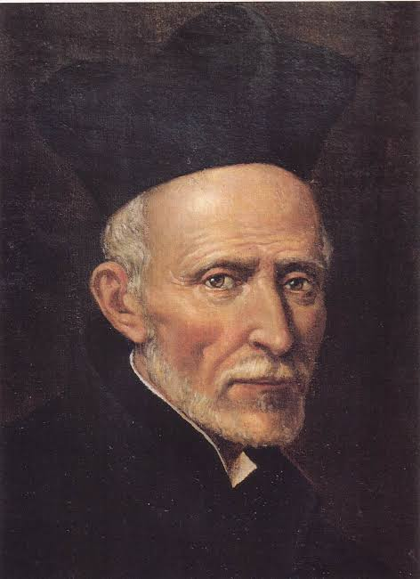
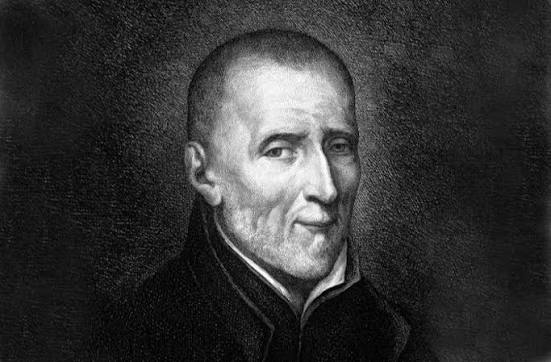

Obras
- **Fundación de la Escuela popular Gratuita:** José de Calasanz fue pionero de la educación al alcance de todos. En una época en que la educación tenía como destinatarios casi exclusivos a los miembros de las familias acomodadas, abrió en 1597 la primera escuela cristiana popular de Europa, donde los niños pobres recibían letras y piedad de forma gratuita.
- **Fundación de las Escuelas Pías:** En 1617 fundó la Congregación de las Escuelas Pías, que en 1621 fue elevada por el papa Gregorio XV a orden religiosa de clérigos regulares. Redactó sus Constituciones, en las que estableció la educación integral del niño como carisma distintivo de la Orden.
- **Defensor de la educación como derecho:** Su vida fue una lucha constante por garantizar que los niños pobres tuvieran acceso a la educación, convencido de que la enseñanza era el camino para transformar la sociedad y salvar las almas.
Biografía
José de Calasanz nació en Peralta de la Sal (Huesca, España) el 11 de septiembre de 1557, el menor de 8 hermanos y desde pequeño fue educado por su madre a la virgen. Con 11 años se trasladó a Estadilla para estudiar humanidades con los padres Trinitarios, a los 14 manifestó su deseo de hacerse sacerdote. Luego estudió Filosofía y Derecho en la Universidad de Lérida y Teología en Valencia, Alcalá de Henares y Lérida, donde coronó sus estudios en el doctorado en teología. Recibió el presbiterado el 17 de diciembre de 1583, en Sanahuja e inició su actividad pastoral en Barbastro como familiar del obispo fray Felipe de Urrieès y en 1585, como familiar del obispo Gaspar Juan de la Figuera, asistió a las cortes de Monzón convocado por Felipe II. En 1592 se trasladó a Roma, donde inicialmente vivió como sacerdote sin un destino fijo. Allí, su vocación encontró un rumbo, cuando contempló la miseria y el abandono de los niños en los barrios más pobres, que crecían sin educación y sin fe. En noviembre de 1597, en la parroquia de Santa Dorotea del Trastévere, abrió la primera escuela popular gratuita de Europa, donde se enseñaba a leer, escribir, contar y la doctrina cristiana a los niños más pobres. En 1617 fundó la Congregación de las Escuelas Pías, y en 1621 el papa Gregorio XV la elevó a orden religiosa de clérigos regulares, donde José de Calasanz adoptó el nombre de José de la Madre de Dios y fue nombrado General de la Orden, consolidando la obra educativa. Falleció en Roma el 25 de agosto de 1648, a sus 90 años. Su obra fue reconocida con su beatificación en 1748 y su canonización el 16 de julio en 1767, por el papa Clemente XIII. El 13 de agosto de 1948, el papa Pío XII lo nombró Patrono de todas las escuelas cristianas del mundo. Se lo conmemora el 25 de agosto y en España el 27 de noviembre se celebra el Día del Maestro en su honor.
Legado
Su legado perdura como el fundador de la escuela pública gratuita moderna en Europa y como patrono universal de las escuelas cristianas. Supo unir la piedad con las letras, convencido de que la educación integral era el camino para la transformación social y espiritual. Su carisma dio origen a las Escuelas Pías, que se extendieron por toda Europa y el mundo, y su figura es modelo de catequista y educador para la Iglesia. En la historia de las Escuelas Pías, José de Calasanz es el fundador y la figura central del carisma escolapio. En 1617 fundó la Congregación, en 1621 la Orden fue reconocida por el papa Gregorio XV, y él mismo fue su primer Prepósito General, cargo que ocupó de 1622 a 1646. Su estatus dentro de la Orden es fundacional: redactó las Constituciones y estableció la educación de los niños pobres como misión esencial, uniendo piedad y letras. Dentro de la Iglesia, fue un pionero de la educación popular. Su obra fue reconocida con su beatificación en 1748, su canonización en 1767 y su proclamación como Patrono de todas las escuelas cristianas del mundo en 1948 por el papa Pío XII.
Testimonio
Su vida es un testimonio de entrega absoluta a la infancia desamparada. Consagró su existencia a los niños pobres de las calles romanas, para fundar una escuela donde todos, sin distinción, pudieran aprender a leer, escribir y conocer a Dios. Su testimonio no fue solo de palabra, fue de acciones heroicas: abrió las puertas de la educación a quienes la sociedad había condenado a la ignorancia.
¿Cuánto sabés sobre San José de Calasanz?
Respondé las siguientes preguntas para comprobar cuánto aprendiste sobre su vida y su obra.
Pregunta 1 de 8